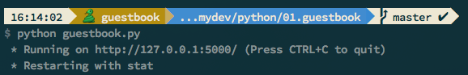

接上期，我们已经编写了如何保存评论的功能，今天我们来编写取出评论的代码：
def load_data():
database = shelve.open(DATA_FILE)
greeting_list = database.get('greeting_list', [])
database.close()
return greeting_list
到这里，本次 guestbook 程序所需的两大函数都准备完毕，接下来我们就要使用 Flask 来呈现页面了。
在 guestbook.py 中添加如下应用：
from flask import Flask, request, render_template, redirect, escape, Markup
from datetime import datetime
application = Flask(__name__)
在之前两个函数之后添加：
@application.route('/')
def index():
greeting_list = load_data()
return render_template('index.html', greeting_list=greeting_list)
#end of @application.route('/')
if __name__ == '__main__':
application.run('127.0.0.1', 5000, debug=True)
保存文件后，运行 python guestbook.py会有下面的提示：

这时，我们在浏览器中打开 http://127.0.0.1:500 就能看到页面了。
接着，我们来编写提交请求保存数据的部分：
@application.route('/post', methods=['POST'])
def post():
name = request.form.get('name')
comment = request.form.get('comments')
create_at = datetime.now()
save_data(name, comment, create_at)
return redirect('/')
#end of @application.route('/post', methods=['POST'])
这样，我们页面提交表单的时候就可以让程序保存提交的数据了。由此简单的一个 guestbook 功能就实现了。